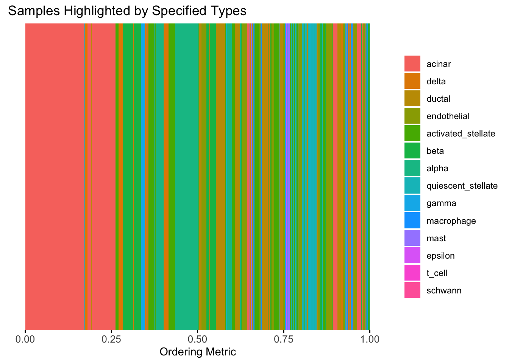
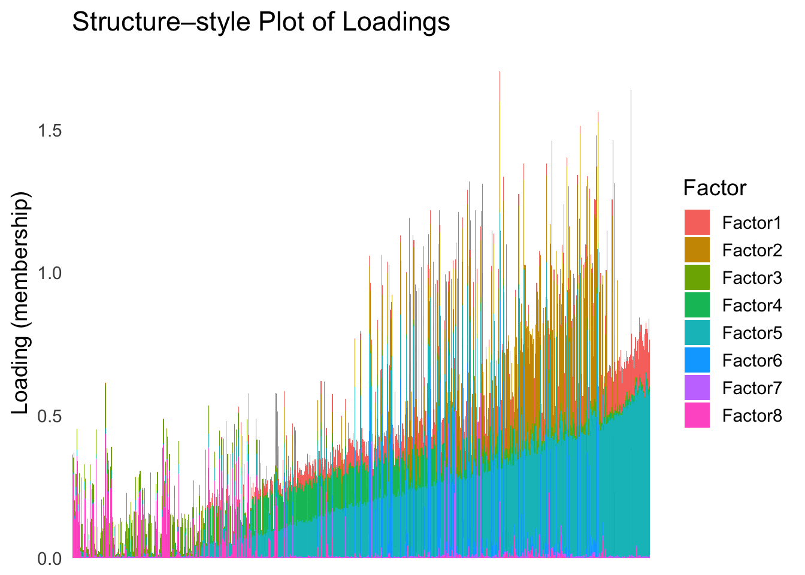

Infering latent ordering from the pancrea dataset
Ziang Zhang
2025-06-23
Last updated: 2025-07-10
Checks: 7 0
Knit directory: InferOrder/
This reproducible R Markdown analysis was created with workflowr (version 1.7.1). The Checks tab describes the reproducibility checks that were applied when the results were created. The Past versions tab lists the development history.
Great! Since the R Markdown file has been committed to the Git repository, you know the exact version of the code that produced these results.
Great job! The global environment was empty. Objects defined in the global environment can affect the analysis in your R Markdown file in unknown ways. For reproduciblity it’s best to always run the code in an empty environment.
The command set.seed(20250707) was run prior to running
the code in the R Markdown file. Setting a seed ensures that any results
that rely on randomness, e.g. subsampling or permutations, are
reproducible.
Great job! Recording the operating system, R version, and package versions is critical for reproducibility.
Nice! There were no cached chunks for this analysis, so you can be confident that you successfully produced the results during this run.
Great job! Using relative paths to the files within your workflowr project makes it easier to run your code on other machines.
Great! You are using Git for version control. Tracking code development and connecting the code version to the results is critical for reproducibility.
The results in this page were generated with repository version 032918c. See the Past versions tab to see a history of the changes made to the R Markdown and HTML files.
Note that you need to be careful to ensure that all relevant files for
the analysis have been committed to Git prior to generating the results
(you can use wflow_publish or
wflow_git_commit). workflowr only checks the R Markdown
file, but you know if there are other scripts or data files that it
depends on. Below is the status of the Git repository when the results
were generated:
Ignored files:
Ignored: .DS_Store
Ignored: .Rhistory
Ignored: .Rproj.user/
Ignored: analysis/.DS_Store
Unstaged changes:
Modified: code/general_EM.R
Modified: code/general_EM_obs.R
Modified: code/linear_EM.R
Note that any generated files, e.g. HTML, png, CSS, etc., are not included in this status report because it is ok for generated content to have uncommitted changes.
These are the previous versions of the repository in which changes were
made to the R Markdown (analysis/explore_pancrea.rmd) and
HTML (docs/explore_pancrea.html) files. If you’ve
configured a remote Git repository (see ?wflow_git_remote),
click on the hyperlinks in the table below to view the files as they
were in that past version.
| File | Version | Author | Date | Message |
|---|---|---|---|---|
| Rmd | 032918c | Ziang Zhang | 2025-07-10 | workflowr::wflow_publish("analysis/explore_pancrea.rmd") |
| html | 29aee93 | Ziang Zhang | 2025-07-09 | Build site. |
| Rmd | e4aadb0 | Ziang Zhang | 2025-07-09 | workflowr::wflow_publish("analysis/explore_pancrea.rmd") |
| html | dbcdf9a | Ziang Zhang | 2025-07-08 | Build site. |
| Rmd | 9867260 | Ziang Zhang | 2025-07-08 | workflowr::wflow_publish("analysis/explore_pancrea.rmd") |
| html | 2f5e139 | Ziang Zhang | 2025-07-08 | Build site. |
| Rmd | 27f1ee5 | Ziang Zhang | 2025-07-08 | workflowr::wflow_publish("analysis/explore_pancrea.rmd") |
Ordering structure plot
Given a set of loadings, we want to infer a latent ordering, that will produce a smooth structure plot.
Data
In this study, we will consider the pancrea dataset studied in here.
For simplicity, we will use the loadings from the semi-NMF, considering only the factors that are most relevant to the cell types, and only a subset of cells with a specific batch type (inDrop3).
library(tibble)
library(tidyr)
library(ggplot2)Warning: package 'ggplot2' was built under R version 4.3.3library(Rtsne)
library(umap)
set.seed(1)
source("./code/plot_ordering.R")
load("./data/loading_order/pancreas_factors.rdata")
load("./data/loading_order/pancreas.rdata")
cells <- subsample_cell_types(sample_info$celltype,n = 500)
Loadings <- fl_snmf_ldf$L[cells,c(3,8,9,12,17,18,20,21)]
celltype <- as.character(sample_info$celltype[cells])
names(celltype) <- rownames(Loadings)
batchtype <- as.character(sample_info$tech[cells])
names(batchtype) <- rownames(Loadings)# Let's further restrict cells to only contain cells from one type of batch
Loadings <- Loadings[batchtype == "inDrop3",]
celltype <- celltype[batchtype == "inDrop3"]
batchtype <- batchtype[batchtype == "inDrop3"]Let’s start with an un-ordered structure plot.
plot_structure(Loadings)
| Version | Author | Date |
|---|---|---|
| 2f5e139 | Ziang Zhang | 2025-07-08 |
First PC
Now, let’s see how does the result look like when we order the structure plot by the first PC.
PC1 <- prcomp(Loadings,center = TRUE, scale. = FALSE)$x[,1]
PC1_order <- order(PC1)
plot_structure(Loadings, order = rownames(Loadings)[PC1_order])
| Version | Author | Date |
|---|---|---|
| 2f5e139 | Ziang Zhang | 2025-07-08 |
Take a look at the ordering metric versus the cell types.
# highlights <- c("acinar","ductal","delta","gamma", "macrophage", "endothelial")
highlights <- unique(celltype)
PC1 <- prcomp(Loadings,center = TRUE, scale. = FALSE)$x[,1]
plot_highlight_types(type_vec = celltype,
subset_types = highlights,
ordering_metric = PC1,
other_color = "white"
)Warning: `position_stack()` requires non-overlapping x intervals.
| Version | Author | Date |
|---|---|---|
| 2f5e139 | Ziang Zhang | 2025-07-08 |
Here the x-axis represents the latent ordering of each cell, and the color represents its cell type. Based on this figure, it appears the first PC distinguishes between (delta, gamma) and (acinar, ductal). However, the ordering could not tell the difference between delta and gamma. Also, the ordering could not distinguish the macrophage from other cell types.
We could also take a look at the distribution of the latent ordering metric for each cell type.
distribution_highlight_types(
type_vec = celltype,
subset_types = highlights,
ordering_metric = PC1,
density = FALSE
)Warning: Groups with fewer than two datapoints have been dropped.
ℹ Set `drop = FALSE` to consider such groups for position adjustment purposes.
| Version | Author | Date |
|---|---|---|
| 2f5e139 | Ziang Zhang | 2025-07-08 |
The ordering just based on the first PC seems to be not bad. Further since the PC has a probabilistic interpretation, the ordering can also be interpreted probabilistically.
tSNE
Just as a comparison, let’s see how does the result look like when we order the structure plot by the first tSNE.
set.seed(1)
tsne <- Rtsne(Loadings, dims = 1, perplexity = 30, verbose = TRUE, check_duplicates = FALSE)Performing PCA
Read the 865 x 8 data matrix successfully!
Using no_dims = 1, perplexity = 30.000000, and theta = 0.500000
Computing input similarities...
Building tree...
Done in 0.03 seconds (sparsity = 0.125422)!
Learning embedding...
Iteration 50: error is 61.378493 (50 iterations in 0.03 seconds)
Iteration 100: error is 53.621893 (50 iterations in 0.03 seconds)
Iteration 150: error is 51.570417 (50 iterations in 0.03 seconds)
Iteration 200: error is 50.534836 (50 iterations in 0.03 seconds)
Iteration 250: error is 49.880683 (50 iterations in 0.03 seconds)
Iteration 300: error is 0.892290 (50 iterations in 0.03 seconds)
Iteration 350: error is 0.620483 (50 iterations in 0.03 seconds)
Iteration 400: error is 0.536455 (50 iterations in 0.03 seconds)
Iteration 450: error is 0.508706 (50 iterations in 0.03 seconds)
Iteration 500: error is 0.487135 (50 iterations in 0.03 seconds)
Iteration 550: error is 0.475625 (50 iterations in 0.03 seconds)
Iteration 600: error is 0.463845 (50 iterations in 0.03 seconds)
Iteration 650: error is 0.453710 (50 iterations in 0.03 seconds)
Iteration 700: error is 0.446554 (50 iterations in 0.03 seconds)
Iteration 750: error is 0.439321 (50 iterations in 0.03 seconds)
Iteration 800: error is 0.434766 (50 iterations in 0.03 seconds)
Iteration 850: error is 0.428145 (50 iterations in 0.03 seconds)
Iteration 900: error is 0.424017 (50 iterations in 0.03 seconds)
Iteration 950: error is 0.420721 (50 iterations in 0.03 seconds)
Iteration 1000: error is 0.417580 (50 iterations in 0.03 seconds)
Fitting performed in 0.63 seconds.tsne_metric <- tsne$Y[,1]
tsne_order <- order(tsne_metric)
names(tsne_metric) <- rownames(Loadings)plot_structure(Loadings, order = rownames(Loadings)[tsne_order])
| Version | Author | Date |
|---|---|---|
| 2f5e139 | Ziang Zhang | 2025-07-08 |
Just based on the structure plot, it seems like the ordering is producing more structured results than the first PC.
plot_highlight_types(type_vec = celltype,
subset_types = highlights,
ordering_metric = tsne_metric,
other_color = "white"
)Warning: `position_stack()` requires non-overlapping x intervals.
| Version | Author | Date |
|---|---|---|
| 2f5e139 | Ziang Zhang | 2025-07-08 |
distribution_highlight_types(
type_vec = celltype,
subset_types = highlights,
ordering_metric = tsne_metric,
density = FALSE
)Warning: Groups with fewer than two datapoints have been dropped.
ℹ Set `drop = FALSE` to consider such groups for position adjustment purposes.
| Version | Author | Date |
|---|---|---|
| 2f5e139 | Ziang Zhang | 2025-07-08 |
Although the tSNE ordering does not have a clear probabilistic interpretation, the structure produced by this ordering matches the cell types much better than the first PC ordering. The distribution of the ordering metric also shows a clear compact separation between the cell types, which is not the case for the first PC. In particular, the macrophage and endothelial cells are now clearly separated from the other cell types.
However, tSNE’s metric only preserves the local structure of the data, and there is no guarantee that the global distance between the points is preserved in the tSNE metric (e.g. the distance between two groups).
UMAP
Let’s see how does the result look like when we order the structure plot by the first UMAP.
umap_result <- umap(Loadings, n_neighbors = 15, min_dist = 0.1, metric = "euclidean")
umap_metric <- umap_result$layout[,1]
names(umap_metric) <- rownames(Loadings)
umap_order <- order(umap_metric)plot_structure(Loadings, order = rownames(Loadings)[umap_order])
| Version | Author | Date |
|---|---|---|
| 2f5e139 | Ziang Zhang | 2025-07-08 |
plot_highlight_types(type_vec = celltype,
subset_types = highlights,
ordering_metric = umap_metric,
other_color = "white"
)Warning: `position_stack()` requires non-overlapping x intervals.
| Version | Author | Date |
|---|---|---|
| 2f5e139 | Ziang Zhang | 2025-07-08 |
distribution_highlight_types(
type_vec = celltype,
subset_types = highlights,
ordering_metric = umap_metric,
density = FALSE
)Warning: Groups with fewer than two datapoints have been dropped.
ℹ Set `drop = FALSE` to consider such groups for position adjustment purposes.
| Version | Author | Date |
|---|---|---|
| 2f5e139 | Ziang Zhang | 2025-07-08 |
UMAP can also provide very clear separation between the cell types. However, just like tSNE, it does not have a clear probabilistic interpretation. Furthermore, the global ordering structure from UMAP seems to conflict with the global ordering structure from the tSNE. In the tSNE ordering, acinar is next to delta, which is next to endothelial, where as in the UMAP ordering, acinar is next to endothelial, which is next to delta.
The separation of macrophage is not as clear as in the tSNE ordering.
Hierarchical Clustering
Next, let’s try doing hierarchical clustering on the loadings and see how does the result look like when we order the structure plot by the hierarchical clustering.
First, let’s try when method = single.
hc <- hclust(dist(Loadings), method = "single")
hc_order <- hc$order
names(hc_order) <- rownames(Loadings)plot_structure(Loadings, order = rownames(Loadings)[hc_order])
| Version | Author | Date |
|---|---|---|
| 2f5e139 | Ziang Zhang | 2025-07-08 |
plot_highlight_types(type_vec = celltype,
subset_types = highlights,
order_vec = rownames(Loadings)[hc_order],
other_color = "white"
)
| Version | Author | Date |
|---|---|---|
| 2f5e139 | Ziang Zhang | 2025-07-08 |
distribution_highlight_types(
type_vec = celltype,
subset_types = highlights,
order_vec = rownames(Loadings)[hc_order],
density = FALSE
)Warning: Groups with fewer than two datapoints have been dropped.
ℹ Set `drop = FALSE` to consider such groups for position adjustment purposes.
| Version | Author | Date |
|---|---|---|
| 2f5e139 | Ziang Zhang | 2025-07-08 |
Similar to t-SNE, the hierarchical clustering ordering also produces a clear separation between the cell types.
Then, let’s try when method = ward.D2.
hc <- hclust(dist(Loadings), method = "ward.D2")
hc_order <- hc$order
names(hc_order) <- rownames(Loadings)plot_structure(Loadings, order = rownames(Loadings)[hc_order])
| Version | Author | Date |
|---|---|---|
| 2f5e139 | Ziang Zhang | 2025-07-08 |
plot_highlight_types(type_vec = celltype,
subset_types = highlights,
order_vec = rownames(Loadings)[hc_order],
other_color = "white"
)
| Version | Author | Date |
|---|---|---|
| 2f5e139 | Ziang Zhang | 2025-07-08 |
distribution_highlight_types(
type_vec = celltype,
subset_types = highlights,
order_vec = rownames(Loadings)[hc_order],
density = FALSE
)Warning: Groups with fewer than two datapoints have been dropped.
ℹ Set `drop = FALSE` to consider such groups for position adjustment purposes.
| Version | Author | Date |
|---|---|---|
| 2f5e139 | Ziang Zhang | 2025-07-08 |
Again, the hierarchical clustering ordering produces a clear separation between the cell types.
However, just like tSNE and UMAP, the hierarchical clustering ordering does not necessarily produce a interpretable global ordering structure. In particular, the ordering is not unique, as clades of the tree can be rearranged without changing the clustering result.
Ordering based on EM
Now, let’s try to obtain the ordering based on the smooth-EM algorithm.
Traditional EM
First, we will see how the traditional EM algorithm performs on the loadings.
library(mclust)Package 'mclust' version 6.1.1
Type 'citation("mclust")' for citing this R package in publications.fit_mclust <- Mclust(Loadings, G=100)Let’s assume observations in the same cluster are ordered next to each other.
loadings_order_EM <- order(fit_mclust$classification)plot_structure(Loadings, order = rownames(Loadings)[loadings_order_EM])
| Version | Author | Date |
|---|---|---|
| 29aee93 | Ziang Zhang | 2025-07-09 |
plot_highlight_types(type_vec = celltype,
subset_types = highlights,
order_vec = rownames(Loadings)[loadings_order_EM],
other_color = "white"
)
| Version | Author | Date |
|---|---|---|
| 29aee93 | Ziang Zhang | 2025-07-09 |
The same cell types tend to be clustered together, but the ordering does not make much sense. This is okay as we know in traditional EM, the index of the cluster is arbitrary.
Smooth-EM with linear prior
source("./code/linear_EM.R")
source("./code/general_EM.R")Warning: package 'matrixStats' was built under R version 4.3.3Warning: package 'mvtnorm' was built under R version 4.3.3
Attaching package: 'mvtnorm'The following object is masked from 'package:mclust':
dmvnorm
Attaching package: 'Matrix'The following objects are masked from 'package:tidyr':
expand, pack, unpacksource("./code/prior_precision.R")
result_linear <- EM_algorithm_linear(
data = Loadings,
K = 100,
betaprec = 0.001,
seed = 123,
max_iter = 100,
tol = 1e-3,
verbose = TRUE
)Iteration 1: objective = 7697.904951
Iteration 2: objective = 7707.333337
Iteration 3: objective = 7740.471790
Iteration 4: objective = 7824.680280
Iteration 5: objective = 7932.772390
Iteration 6: objective = 8004.887583
Iteration 7: objective = 8048.786905
Iteration 8: objective = 8082.151208
Iteration 9: objective = 8108.914531
Iteration 10: objective = 8128.262919
Iteration 11: objective = 8140.589009
Iteration 12: objective = 8148.242727
Iteration 13: objective = 8153.754444
Iteration 14: objective = 8158.892229
Iteration 15: objective = 8164.775036
Iteration 16: objective = 8172.209580
Iteration 17: objective = 8181.844606
Iteration 18: objective = 8194.050410
Iteration 19: objective = 8208.553655
Iteration 20: objective = 8224.115553
Iteration 21: objective = 8238.839898
Iteration 22: objective = 8251.246227
Iteration 23: objective = 8261.096431
Iteration 24: objective = 8269.093358
Iteration 25: objective = 8276.041121
Iteration 26: objective = 8282.391788
Iteration 27: objective = 8288.274436
Iteration 28: objective = 8293.675980
Iteration 29: objective = 8298.567980
Iteration 30: objective = 8302.950218
Iteration 31: objective = 8306.847980
Iteration 32: objective = 8310.299406
Iteration 33: objective = 8313.349138
Iteration 34: objective = 8316.047888
Iteration 35: objective = 8318.452196
Iteration 36: objective = 8320.621235
Iteration 37: objective = 8322.611615
Iteration 38: objective = 8324.472662
Iteration 39: objective = 8326.243878
Iteration 40: objective = 8327.954752
Iteration 41: objective = 8329.626164
Iteration 42: objective = 8331.272395
Iteration 43: objective = 8332.903070
Iteration 44: objective = 8334.524663
Iteration 45: objective = 8336.141525
Iteration 46: objective = 8337.756516
Iteration 47: objective = 8339.371381
Iteration 48: objective = 8340.986992
Iteration 49: objective = 8342.603518
Iteration 50: objective = 8344.220562
Iteration 51: objective = 8345.837262
Iteration 52: objective = 8347.452327
Iteration 53: objective = 8349.064049
Iteration 54: objective = 8350.670270
Iteration 55: objective = 8352.268358
Iteration 56: objective = 8353.855204
Iteration 57: objective = 8355.427242
Iteration 58: objective = 8356.980488
Iteration 59: objective = 8358.510581
Iteration 60: objective = 8360.012823
Iteration 61: objective = 8361.482229
Iteration 62: objective = 8362.913615
Iteration 63: objective = 8364.301750
Iteration 64: objective = 8365.641605
Iteration 65: objective = 8366.928691
Iteration 66: objective = 8368.159455
Iteration 67: objective = 8369.331684
Iteration 68: objective = 8370.444838
Iteration 69: objective = 8371.500247
Iteration 70: objective = 8372.501125
Iteration 71: objective = 8373.452390
Iteration 72: objective = 8374.360303
Iteration 73: objective = 8375.231997
Iteration 74: objective = 8376.074940
Iteration 75: objective = 8376.896412
Iteration 76: objective = 8377.703041
Iteration 77: objective = 8378.500430
Iteration 78: objective = 8379.292888
Iteration 79: objective = 8380.083277
Iteration 80: objective = 8380.872937
Iteration 81: objective = 8381.661719
Iteration 82: objective = 8382.448072
Iteration 83: objective = 8383.229208
Iteration 84: objective = 8384.001319
Iteration 85: objective = 8384.759839
Iteration 86: objective = 8385.499737
Iteration 87: objective = 8386.215835
Iteration 88: objective = 8386.903115
Iteration 89: objective = 8387.557006
Iteration 90: objective = 8388.173626
Iteration 91: objective = 8388.749967
Iteration 92: objective = 8389.284001
Iteration 93: objective = 8389.774717
Iteration 94: objective = 8390.222091
Iteration 95: objective = 8390.626991
Iteration 96: objective = 8390.991049
Iteration 97: objective = 8391.316501
Iteration 98: objective = 8391.606022
Iteration 99: objective = 8391.862565
Iteration 100: objective = 8392.089216result_linear$clustering <- apply(result_linear$gamma, 1, which.max)
loadings_order_linear <- order(result_linear$clustering)
plot_structure(Loadings, order = rownames(Loadings)[loadings_order_linear])
| Version | Author | Date |
|---|---|---|
| 29aee93 | Ziang Zhang | 2025-07-09 |
plot_highlight_types(type_vec = celltype,
subset_types = highlights,
order_vec = rownames(Loadings)[loadings_order_linear],
other_color = "white"
)
| Version | Author | Date |
|---|---|---|
| 29aee93 | Ziang Zhang | 2025-07-09 |
The ordering from linear prior does not look very informative, which is not unexpected since the linear prior is like a coarser version of the PCA.
Smooth-EM with RW1 prior
Now, let’s try the smooth-EM algorithm with a first order random walk prior.
set.seed(123)
Q_prior_RW1 <- make_random_walk_precision(K=100, d=ncol(Loadings), lambda = 10000, q=1)
init_params <- make_default_init(Loadings, K=100)
result_RW1 <- EM_algorithm(
data = Loadings,
Q_prior = Q_prior_RW1,
init_params = init_params,
max_iter = 100,
modelName = "EEI",
tol = 1e-3,
verbose = TRUE
)Iteration 1: objective = 11342.481336
Iteration 2: objective = 11342.492370
Iteration 3: objective = 11342.530363
Iteration 4: objective = 11342.714022
Iteration 5: objective = 11343.608347
Iteration 6: objective = 11347.901317
Iteration 7: objective = 11367.021400
Iteration 8: objective = 11433.676639
Iteration 9: objective = 11571.347654
Iteration 10: objective = 11747.174603
Iteration 11: objective = 12067.949655
Iteration 12: objective = 12788.480477
Iteration 13: objective = 14131.918367
Iteration 14: objective = 15061.694083
Iteration 15: objective = 15619.984311
Iteration 16: objective = 16199.798871
Iteration 17: objective = 16714.975200
Iteration 18: objective = 17142.303555
Iteration 19: objective = 17373.950565
Iteration 20: objective = 17426.934266
Iteration 21: objective = 17494.851962
Iteration 22: objective = 17526.820016
Iteration 23: objective = 17531.632651
Iteration 24: objective = 17545.615448
Iteration 25: objective = 17573.857249
Iteration 26: objective = 17576.728985
Iteration 27: objective = 17585.627075
Iteration 28: objective = 17590.942767
Iteration 29: objective = 17597.913291
Iteration 30: objective = 17597.418594
Converged at iteration 30 with objective 17597.418594result_RW1$clustering <- apply(result_RW1$gamma, 1, which.max)
loadings_order_RW1 <- order(result_RW1$clustering)
plot_structure(Loadings, order = rownames(Loadings)[loadings_order_RW1])
| Version | Author | Date |
|---|---|---|
| 29aee93 | Ziang Zhang | 2025-07-09 |
plot_highlight_types(type_vec = celltype,
subset_types = highlights,
order_vec = rownames(Loadings)[loadings_order_RW1],
other_color = "white"
)
| Version | Author | Date |
|---|---|---|
| 29aee93 | Ziang Zhang | 2025-07-09 |
The result from RW1 looks good. Each cell type is separated from the others, and the ordering seems to make sense.
Smooth-EM with RW2 prior
Next, we will try the RW2 prior in the smooth-EM algorithm.
Q_prior_RW2 <- make_random_walk_precision(K=100, d=ncol(Loadings), lambda = 20000, q=2)
set.seed(1234)
init_params <- make_default_init(Loadings, K=100)
result_RW2 <- EM_algorithm(
data = Loadings,
Q_prior = Q_prior_RW2,
init_params = init_params,
max_iter = 100,
modelName = "EEI",
tol = 1e-3,
verbose = TRUE
)Iteration 1: objective = 11610.707865
Iteration 2: objective = 11611.012288
Iteration 3: objective = 11612.467725
Iteration 4: objective = 11619.537033
Iteration 5: objective = 11651.133683
Iteration 6: objective = 11763.143096
Iteration 7: objective = 12019.538719
Iteration 8: objective = 12406.384211
Iteration 9: objective = 13195.240188
Iteration 10: objective = 14797.093833
Iteration 11: objective = 16171.899758
Iteration 12: objective = 17359.843511
Iteration 13: objective = 18397.170248
Iteration 14: objective = 18788.820493
Iteration 15: objective = 18927.026536
Iteration 16: objective = 18983.743391
Iteration 17: objective = 19002.218344
Iteration 18: objective = 18976.113164
Converged at iteration 18 with objective 18976.113164result_RW2$clustering <- apply(result_RW2$gamma, 1, which.max)
loadings_order_RW2 <- order(result_RW2$clustering)
plot_structure(Loadings, order = rownames(Loadings)[loadings_order_RW2])
| Version | Author | Date |
|---|---|---|
| 29aee93 | Ziang Zhang | 2025-07-09 |
plot_highlight_types(type_vec = celltype,
subset_types = highlights,
order_vec = rownames(Loadings)[loadings_order_RW2],
other_color = "white"
)
| Version | Author | Date |
|---|---|---|
| 29aee93 | Ziang Zhang | 2025-07-09 |
The result also looks good, but the choice of the smoothing parameter
(lambda) is very important…
sessionInfo()R version 4.3.1 (2023-06-16)
Platform: aarch64-apple-darwin20 (64-bit)
Running under: macOS Monterey 12.7.4
Matrix products: default
BLAS: /Library/Frameworks/R.framework/Versions/4.3-arm64/Resources/lib/libRblas.0.dylib
LAPACK: /Library/Frameworks/R.framework/Versions/4.3-arm64/Resources/lib/libRlapack.dylib; LAPACK version 3.11.0
locale:
[1] en_US.UTF-8/en_US.UTF-8/en_US.UTF-8/C/en_US.UTF-8/en_US.UTF-8
time zone: America/Chicago
tzcode source: internal
attached base packages:
[1] stats graphics grDevices utils datasets methods base
other attached packages:
[1] Matrix_1.6-4 mvtnorm_1.3-1 matrixStats_1.4.1 mclust_6.1.1
[5] umap_0.2.10.0 Rtsne_0.17 ggplot2_3.5.2 tidyr_1.3.1
[9] tibble_3.2.1 workflowr_1.7.1
loaded via a namespace (and not attached):
[1] sass_0.4.10 generics_0.1.4 stringi_1.8.7 lattice_0.22-6
[5] digest_0.6.37 magrittr_2.0.3 evaluate_1.0.3 grid_4.3.1
[9] RColorBrewer_1.1-3 fastmap_1.2.0 rprojroot_2.0.4 jsonlite_2.0.0
[13] processx_3.8.6 whisker_0.4.1 RSpectra_0.16-2 ps_1.9.1
[17] promises_1.3.3 httr_1.4.7 purrr_1.0.4 scales_1.4.0
[21] jquerylib_0.1.4 cli_3.6.5 rlang_1.1.6 withr_3.0.2
[25] cachem_1.1.0 yaml_2.3.10 tools_4.3.1 dplyr_1.1.4
[29] httpuv_1.6.16 reticulate_1.42.0 png_0.1-8 vctrs_0.6.5
[33] R6_2.6.1 lifecycle_1.0.4 git2r_0.33.0 stringr_1.5.1
[37] fs_1.6.6 pkgconfig_2.0.3 callr_3.7.6 pillar_1.10.2
[41] bslib_0.9.0 later_1.4.2 gtable_0.3.6 glue_1.8.0
[45] Rcpp_1.0.14 xfun_0.52 tidyselect_1.2.1 rstudioapi_0.16.0
[49] knitr_1.50 farver_2.1.2 htmltools_0.5.8.1 labeling_0.4.3
[53] rmarkdown_2.28 compiler_4.3.1 getPass_0.2-4 askpass_1.2.1
[57] openssl_2.2.2